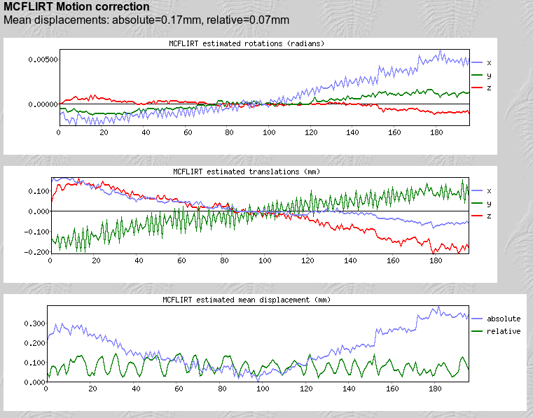

Design Team 0 Slides
Eric Bridgeford, Albert Lee, Eric Walker
F2G pipeline leg overview
Eric Bridgeford
Steps to Analysis
- Raw Data
- Distortion Correction
- Motion Correction
- Slice Timing Correction
- Spatial Smoothing
- Registration
- Statistical Analysis
Restrictions
Why Not just go right at it?
- This is a lot to do at once!
- Can get something working, and add piecewise
- Allows us to see what improves and what worsens our pipeline
Necessary Pipeline
- Raw Data
- Motion Correction
- Registration
- Timeseries Extraction
- Graph Generation
Raw Data
- fMRI functional data
- MPRAGE anatomical data
Motion Correction
- Two approaches
- Eddy Correction
- mcFLIRT
Eddy Correction
mgr().align(args)
- Self alignment for DTI images
- Advantages: Easy, already written code (courtesy of Greg)
- Disadvantages: mcFLIRT is super awesome and the gold standard
mcFLIRT
- FSL's tool for motion correction
- What it does: takes into consideration x, y, z positions, as well as x, y, z rotations
- Advantages: provides TONS of built in QC, actually used for fMRI (used by Harvard, MIT, and CPAC, to my knowledge, CC hasn't returned my emails though :( )
- Disadvantages: Code not written yet
Pseudocode for mcFLIRT
mcflirt -in input_func_data -out out_func_data_mcf -mats -plots -refvol 0
- Example of the built in output plots

DICE Quality Control metric for MC
- DICE: similarity of two samples (after motion correction background)
- obtain DICE comparisons of each slice to the 0th slice, before and after MC
- show kernel density plots of the DICE values, before and after MC
- Goal: show that our average DICE value is greater after MC (DICEbefore < DICE after)
Pseudocode for DICE Comparison
for timepoint in fMRI:
for slices in fMRI(timepoint):
for col in (before, after):
comparisons[idx] = DICE(fMRI(timepoint, slice), fMRI(timepoint, 0))
plot(kde(comparisons))
assert(mean(comparisons(before)) < mean(comparisons(after))) # the images overlap better after correction

Visual Images Qualitative Quality Control for MC
- produce (numtimepoints) images with (numslices) plots x 2 columns per subject
- figure shows overlap of each slice with the 0th slice, along with DICE score
- left column is before MC, right column is after MC
- pseudocode is same as for registration QC (later)
- quantitative: mean DICE score per subject before and after registration
Registration
- Think: if my brain is in one layout and yours is in another, how can we compare?
- Solution: Image Registration
- Basics: Align slices of a brain to a template brain, and "warp" the brain to the template space
- Template Brain: a brian made from averages many peoples' structural scans
Procedure for Registration
- align first slice of MC'd fMRI image to MPRAGE image
- align MPRAGE image to the atlas space
- combine previous two transformation matrices
- align fMRI stack to template space
- Why not just go fMRI -> template? far less robust
Pseudocode for Registration
mgr().align(fMRI(slice0), mprage, xfm1) # aligns slice 0 to mprage space
mgr().align(fMRI(slice0), atlas, xfm2) # aligns mprage to atlas space
convert_xfm -omat xfm3 -concat xfm1 xfm2 # combines alignments
mgr().apply_xfm(fMRI, template, xfm3, fMRI_templatespace) # aligns fMRI to template and saves as fMRI_templatespace
Quality Control for Registration
- Same as for MC, except instead of the 0th slice, use the template brain
- plot with left column before, right column after registration
- quantitative test: show the mean DICE score before and after
Pseudocode for MC and Registration visual quality control
for timepoint in fMRI:
for slice in fMRI(timepoint):
for column in (before, after):
plot(fMRI(timepoint)(slice), template)
dicelist[timepoint, slice, col] = dice(fMRI(timepoint)(slice), template)
title(dicelist[timepoint, slice, idx])
assert(mean(dicelist[,,col == after] > dicelist[,,col == before])
Downsampling
- We now have our voxel timeseries in standard image spaces
- Problem: images have many voxels
- Solution: use a labelled atlas to take mean signals over regions of interest (rois)
- Procedure is similar, but not identical, to DTI procedure
Pseudocode for downsampling
# given a matrix data[x, y, z, time]
for roi in regions(labelled atlas): # where roi is a collection of x,y,z coordinates of
# the space occupied by this roi
voxellist = get voxel coordinates occupied by this roi in the labelled atlas
down_data[roi,] = mean(data[voxellist,]) # take mean along the voxels and preserve time dimension
# gives us a (numrois) x (timesteps) output data
Quality Control for Downsampling Quality/Overall Pipeline
- discriminability: metric where high value indicates intra subject relationships between graphs are stronger than inter subject relationships
- intra subject = same subject, different scan
- inter subject = different subject, different scan
- Qualitiative/Quantitative 1: distance matrix with discriminability as title
- Qualitative/Quantitative 2: intra vs inter subject distances, hellinger distance
Example Discriminability Plot